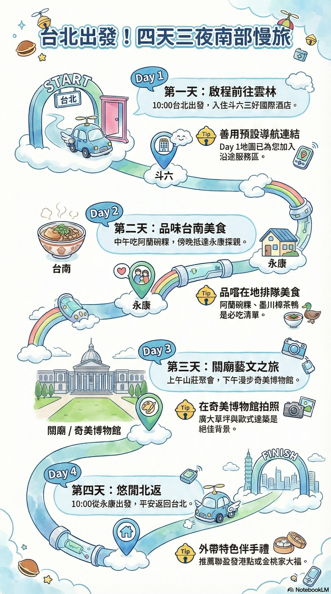
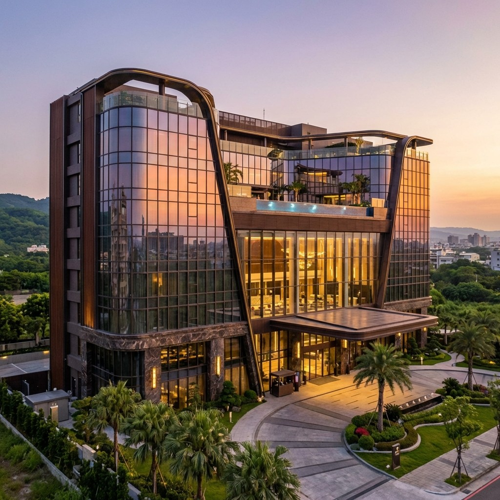
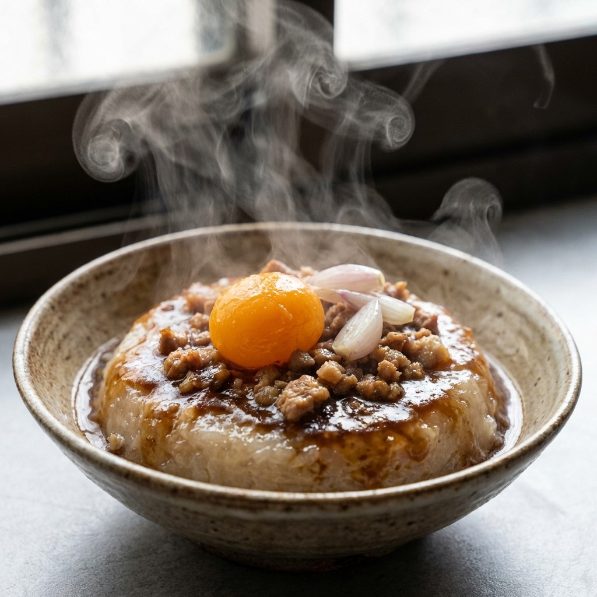
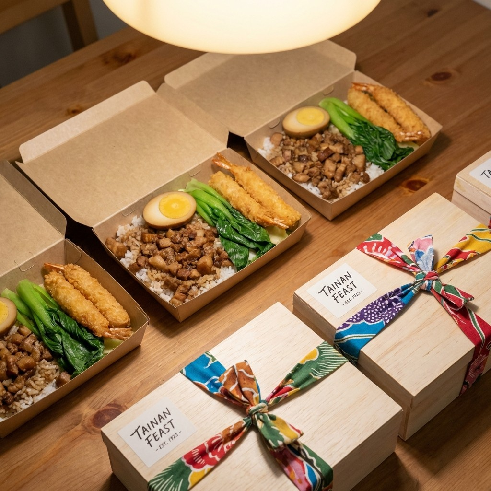

點擊圖片放大 / 向下滾動
10:00 出發 (國三→國一)
停靠 1: 關西服務區 (76K)
停靠 2: 西湖服務區 (134K)
停靠 3: 清水服務區 (172K)

🏨 下榻：斗六三好國際酒店
雲林著名的五星級酒店，頂樓設有景觀游泳池，視野開闊，是旅途中放鬆身心的極佳選擇。
11:00 Check out

🍴 午餐：麻豆阿蘭碗粿
知名在地老店，口感Q彈扎實，配料豐富，必嚐的道地滋味。
→ 台灣首府大學 (校園散步享受寧靜時光)

🍱 16:30 買晚餐/伴手禮
推薦外帶：聯盈發港式點心 或 金桃家草莓大福，帶去大姑姑家共同分享。
→ 17:00 抵達 永康火車站 (大姑姑家)
09:00 悠然山莊 (關廟上課/吃辦桌)
14:00 奇美博物館園區
仿凡爾賽宮風格建築，藍天下純白館舍如詩如畫，廣大草坪非常適合放空與拍照。
18:00 晚餐：LA-墨川樟茶鴨
在地口碑極佳，鴨肉皮脆肉嫩，散發獨特樟茶燻香。
提示：第一天地圖已加入中途服務區點位。點擊「開啟含停靠點導航」可直接導航。
「親愛的天父，我們為著這次台北的春節之旅獻上感恩。主啊，求祢在恩典的道路上與我們同行，無論是北上南下的交通，或是親友聚餐的時刻，都求祢賜下平安與喜樂。願祢的主角地位在我們心中永不動搖，讓我們在歡慶中依舊有一顆警醒與感恩的心。願祢保守我們的前後進出，從今時直到永遠。奉主耶穌基督得勝的名求。阿們。」